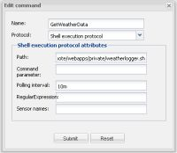

|
This page last changed on May 28, 2013 by pz1.
I have defined a shell execution command that starts the following script every 10 minutes. I noticed that this command is only fired if I have a sensor made for it. The command is

The script I use is:
#!/bin/sh
cd /volume1/@appstore/OpenRemote/webapps/private > /dev/null
wget -t 1 -N http: date -u >> test.log
exit
As can be seen in the test.log, at first it nicely runs every 10 minutes, but later on it is called more frequent.
Tue May 28 09:36:15 UTC 2013
Tue May 28 09:46:24 UTC 2013
Tue May 28 09:56:25 UTC 2013
Tue May 28 10:06:26 UTC 2013
Tue May 28 10:16:27 UTC 2013
Tue May 28 10:26:28 UTC 2013
Tue May 28 10:36:29 UTC 2013
Tue May 28 10:46:30 UTC 2013
Tue May 28 10:56:31 UTC 2013
Tue May 28 10:59:54 UTC 2013
Tue May 28 11:06:32 UTC 2013
Tue May 28 11:09:55 UTC 2013
Tue May 28 11:16:33 UTC 2013
Tue May 28 11:19:57 UTC 2013
Tue May 28 11:26:34 UTC 2013
Tue May 28 11:29:58 UTC 2013
....
Tue May 28 16:18:19 UTC 2013
Tue May 28 16:19:31 UTC 2013
Tue May 28 16:20:41 UTC 2013
Tue May 28 16:22:57 UTC 2013
Tue May 28 16:28:20 UTC 2013
Tue May 28 16:29:32 UTC 2013
Tue May 28 16:30:45 UTC 2013
Tue May 28 16:32:57 UTC 2013
Tue May 28 16:38:21 UTC 2013
Tue May 28 16:39:32 UTC 2013
Tue May 28 16:40:46 UTC 2013
Tue May 28 16:42:58 UTC 2013
I do need a fixed interval, as if it gets more frequent, I go over the download limit of the Wunderground services.
I do read my weather data from the downloaded local XML.
Anyone who has a clue what might go wrong? My controller runs on a Synology DS212+
|
This morning I "commented out" the wget line from my script. From 06:45 - 13:25 UTC it has promptly run only at 10 minute intervals as designed. So it does not seem like an OpenRemote problem.
Anyone who has a clue why/how these spurious wild runs of the script may occur?

Posted by pz1 at May 29, 2013 14:43
|
|
It sounds a bit strange – the one thing that tends to throw things off timing wise is CPU overuse that eventually causes time measurements to get out of sync. But even then I'd consider they'd go longer over 10 minutes rather than get shorter.
I haven't looked what mechanism is used on the OR protocol side for time measurements in shell execution and whether that would be isolated from the time it takes completing the script.
Posted by juha at May 30, 2013 20:05
|
|
I looked again this morning, and noticed that even with the commented out Wget, the script is getting out of sync. So that might point to OR again. But I should look more precisely on that observation to see how consistent it is. I am too busy with a new thermostat at the moment.
Posted by pz1 at May 30, 2013 20:55
|
|
I left the system alone overnight. It's got really bad now. just a snippet from the log
Fri May 31 05:53:37 UTC 2013
Fri May 31 05:54:02 UTC 2013
Fri May 31 05:54:21 UTC 2013
Fri May 31 05:54:58 UTC 2013
Fri May 31 05:55:11 UTC 2013
Fri May 31 05:55:32 UTC 2013
Fri May 31 05:55:43 UTC 2013
Fri May 31 05:56:09 UTC 2013
Fri May 31 05:56:43 UTC 2013
Fri May 31 05:57:02 UTC 2013
I am running controller on Synology DS212+: CPU usage is below 20%, memory usage is 40%, lan traffic 3 kBs, so not signs of a system in distress.
As an alternative I tried to get the script to run using crontab on Synology, but never managed to get that to work. Cron deamon seems to be running.
Edit: One more observation. In Designer I just removed the polling interval, and also removed the sensor. Next I synchronised with controller. I verified that the controller.xml has the correct new settings. Still the script file seems to continue being active. This can only be stopped with a reboot.
At the end of the active process list (ps) I see:
9859 openremo 294m S /volume1/@appstore/java6/jre/bin/java -Dcatalina.home=/volume1/@appstore/OpenRemote -Dcatalina.base=/volume1/@appstore/OpenRemote
11794 root 13296 S /usr/syno/apache/bin/httpd -f /usr/syno/apache/conf/httpd.conf-sys
12920 root 13232 S /usr/syno/apache/bin/httpd -f /usr/syno/apache/conf/httpd.conf-sys
12921 root 13076 S /usr/syno/apache/bin/httpd -f /usr/syno/apache/conf/httpd.conf-sys
13262 root 13296 S /usr/syno/apache/bin/httpd -f /usr/syno/apache/conf/httpd.conf-sys
13529 root 13076 S /usr/syno/apache/bin/httpd -f /usr/syno/apache/conf/httpd.conf-sys
13536 root 13208 S /usr/syno/apache/bin/httpd -f /usr/syno/apache/conf/httpd.conf-sys
13537 root 13256 S /usr/syno/apache/bin/httpd -f /usr/syno/apache/conf/httpd.conf-sys
Unfortunately I can't judge if this is something bad.
Posted by pz1 at May 31, 2013 08:29
|
|
I never solved this problem. In the meantime I finally got crontab working correctly on my Synology. So I do not need a solution for this anymore, as actually the timed Shell Execution command was a work-around for the failing crontab.
Posted by pz1 at Jun 03, 2013 09:21
|
|
{kind=link}
{kind=link}